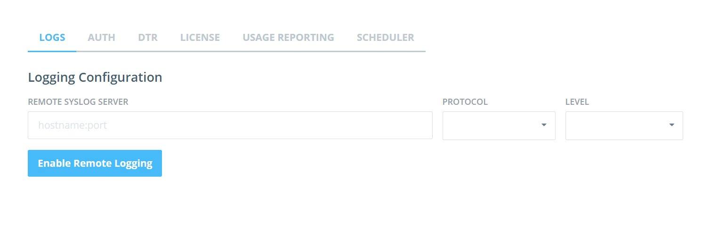
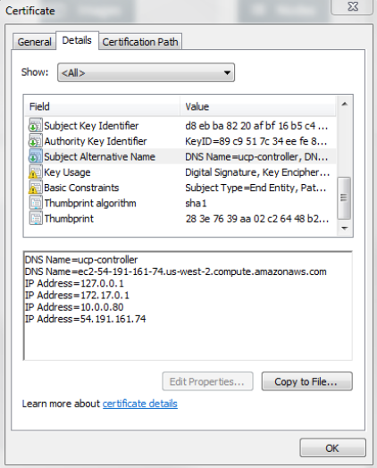

Mini lecture - Monitoring and Recovery of UCP and applications
Mini lecture - Monitoring and Recovery of UCP and applications
Monitoring applications
- Understand the containers involved in each application and their function
- Container details tab tells us important information about the configuration of the container
- Can check container logs from the GUI
- Equivalent of running
docker logs
- "Stats" tab shows CPU and memory usage along with network traffic
- "Console" tab provides console access
Dashboard statistics
- Combined CPU and Memory usage and capacity from all nodes are displayed
- CPU and memory is based on how much is reserved for various containers, not actual real time usage
- Will only be updated if containers are run with the Memory shares or CPU shares options configured
Monitoring UCP
- UCP container logs
- Error message can often be found on the
ucp-controller log
- Log messages can be sent to syslog server

Node recovery
- All containers on a failed node stop running
- Containers cannot be transferred to other nodes in the cluster
- Try to restart the node
- Check Swarm containers:
- If Swarm join container is not running, restart it
- If that does not work, uninstall and reinstall UCP for that node only
- On Node restart, containers that were previously running need to be manually restarted
- Can set restart policy on containers
Controller recovery
- Restart ucp-controller container
- Even with HA setup, restart your main controller ASAP
- CA certs are only stored on the main controller
Common problems
- X509 certificate signed by unknown authority when using client bundle
- Usually indicates incorrect SAN configuration on UCP install
- Check certificate on your browser to find the SAN values
- Change
DOCKER_HOST variable to use a supported SAN value on your certificate

- 500 Internal Server Error: failed to parse pool request for address space "GlobalDefault" pool ...
- Occurs when trying to create an overlay network when nodes have not been registered with
etcd
- Multi host networking not setup or setup incorrectly
- Check configuration on each node at
/etc/docker/daemon.json
- Check
ucp-controller logs for error messages concerning the cluster
- 409 Conflict: subnet sandbox join failed for "": overlay subnet has conflicts in the host while running in host mode
- Subnet conflicts with existing subnet on the host
- Tends to occur on Amazon EC2 nodes
- Solution: create the network with a manually defined subnet
- Solution: Upgrade Linux kernel to 3.19+